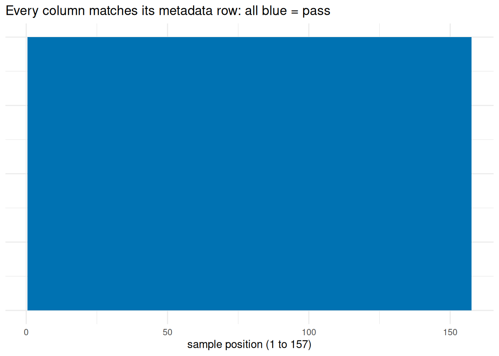
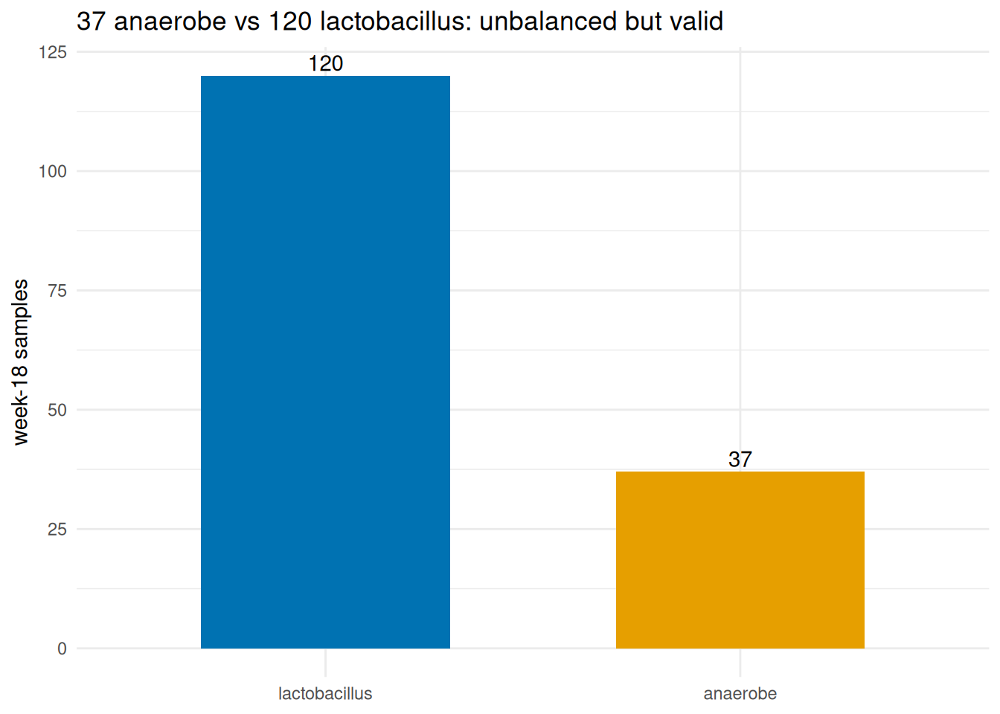
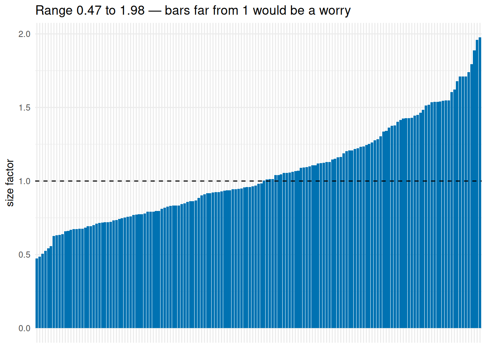
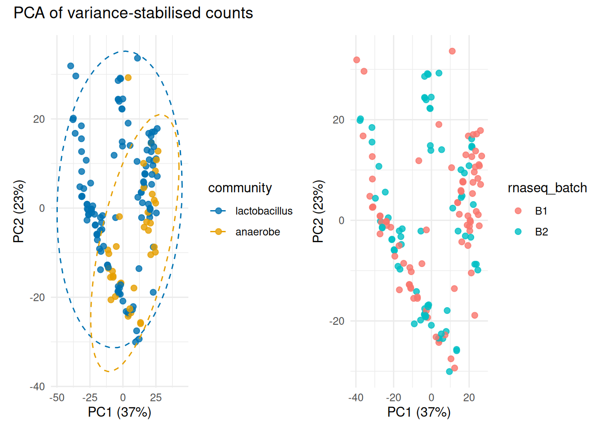
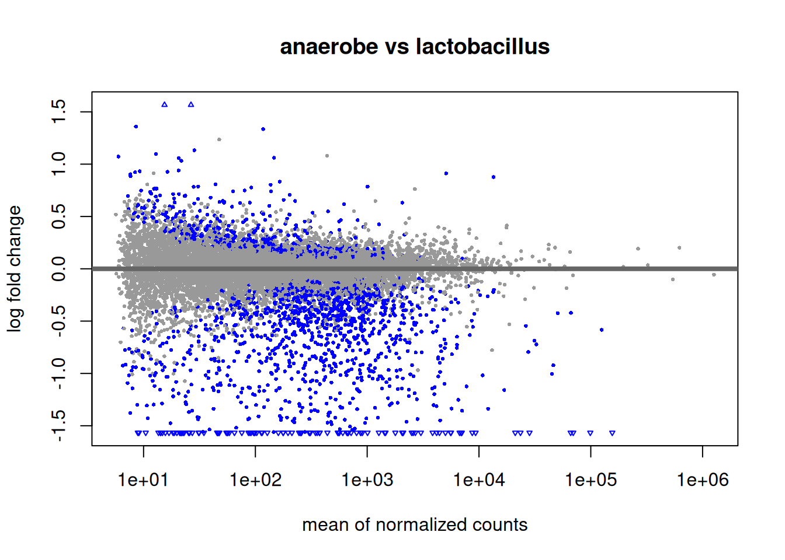
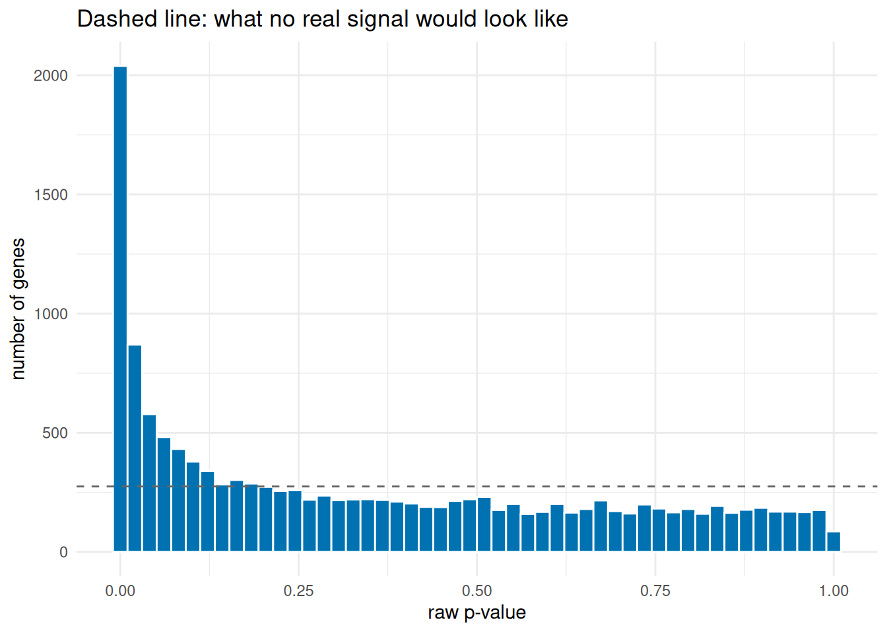
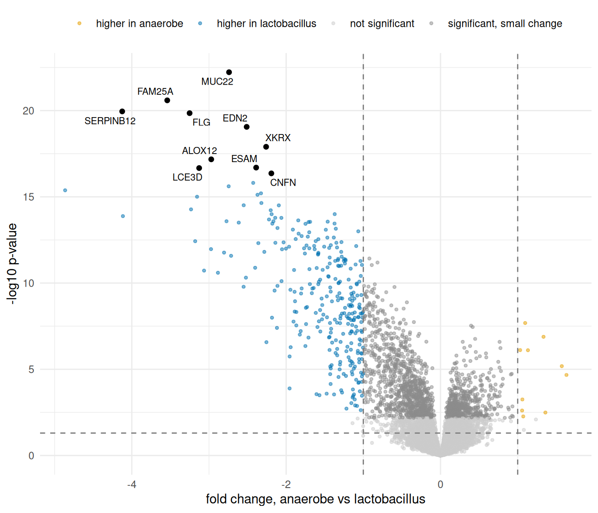
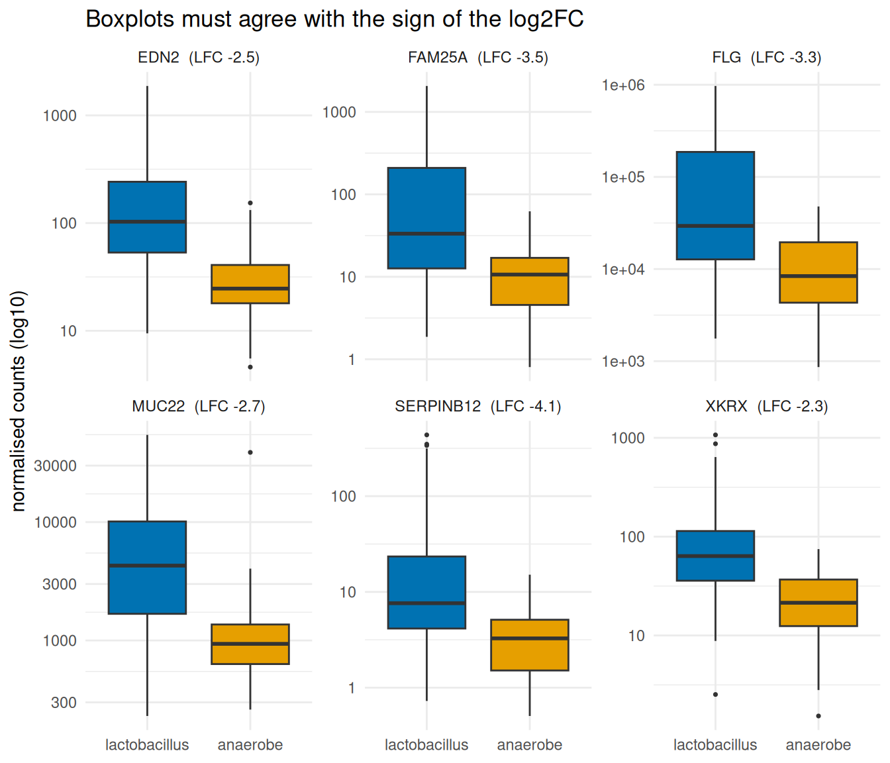

order_ok <- identical(colnames(genes18), meta18$sample_id)
stopifnot(order_ok)
cat("Columns match sample_id in order:", order_ok, "-", ncol(genes18), "samples\n")Columns match sample_id in order: TRUE - 157 samplesExercise 1, notebook 04 · week 18 samples · DESeq2
This report tests the gene table against the community grouping and checks three things that go wrong silently:
The grouping was built from the species table in notebook 02, and is tested here on the gene table — group and test never share a table.
order_ok <- identical(colnames(genes18), meta18$sample_id)
stopifnot(order_ok)
cat("Columns match sample_id in order:", order_ok, "-", ncol(genes18), "samples\n")Columns match sample_id in order: TRUE - 157 samplesThe check is identical(colnames(genes18), meta18$sample_id). It stops the report if the names disagree, so nothing downstream can run on misaligned data. DESeq2 pairs columns and rows by position, not by name, and never warns if they differ — this one line is the protection.
tibble(
position = 1:8,
count_column = colnames(genes18)[1:8],
metadata_id = meta18$sample_id[1:8],
same = ifelse(count_column == metadata_id, "match", "MISMATCH")
)# A tibble: 8 × 4
position count_column metadata_id same
<int> <chr> <chr> <chr>
1 1 P001_week_18 P001_week_18 match
2 2 P002_week_18 P002_week_18 match
3 3 P003_week_18 P003_week_18 match
4 4 P004_week_18 P004_week_18 match
5 5 P005_week_18 P005_week_18 match
6 6 P006_week_18 P006_week_18 match
7 7 P007_week_18 P007_week_18 match
8 8 P008_week_18 P008_week_18 matchggplot(tibble(pos = 1:157,
match = colnames(genes18) == meta18$sample_id),
aes(x = pos, y = 1, fill = match)) +
geom_tile(show.legend = FALSE) +
scale_fill_manual(values = c("TRUE" = "#0072B2", "FALSE" = "#D55E00")) +
labs(x = "sample position (1 to 157)", y = NULL,
title = "Every column matches its metadata row: all blue = pass") +
theme_minimal() + theme(axis.text.y = element_blank())
The table shows the first 8 positions agree name by name, and the bar below checks all 157 positions the same way — all blue, so column i holds the counts for the sample in row i.
counts_by_group <- dplyr::count(meta18, community)
counts_by_group# A tibble: 2 × 2
community n
<fct> <int>
1 lactobacillus 120
2 anaerobe 37ggplot(counts_by_group, aes(community, n, fill = community)) +
geom_col(width = 0.6, show.legend = FALSE) +
geom_text(aes(label = n), vjust = -0.3) +
scale_fill_manual(values = c(anaerobe = "#E69F00",
lactobacillus = "#0072B2")) +
labs(x = NULL, y = "week-18 samples",
title = "37 anaerobe vs 120 lactobacillus: unbalanced but valid") +
theme_minimal()
resultsNames(dds)[1] "Intercept" "community_anaerobe_vs_lactobacillus"summary(res)
out of 13738 with nonzero total read count
adjusted p-value < 0.1
LFC > 0 (up) : 868, 6.3%
LFC < 0 (down) : 1521, 11%
outliers [1] : 0, 0%
low counts [2] : 0, 0%
(mean count < 6)
[1] see 'cooksCutoff' argument of ?results
[2] see 'independentFiltering' argument of ?resultsres_df <- as.data.frame(res) |> rownames_to_column("feature")
sig <- filter(res_df, padj < 0.05)
tribble(
~quantity, ~n,
"raw p-value < 0.05", sum(res_df$pvalue < 0.05, na.rm = TRUE),
"padj < 0.05", nrow(sig),
"padj < 0.05 & |log2FC| > 1 (more than two-fold)", sum(abs(sig$log2FoldChange) > 1),
"of those: higher in anaerobe (LFC > 1)", sum(sig$log2FoldChange > 1),
"of those: higher in lactobacillus (LFC < -1)", sum(sig$log2FoldChange < -1)
)# A tibble: 5 × 2
quantity n
<chr> <int>
1 raw p-value < 0.05 3459
2 padj < 0.05 1815
3 padj < 0.05 & |log2FC| > 1 (more than two-fold) 303
4 of those: higher in anaerobe (LFC > 1) 10
5 of those: higher in lactobacillus (LFC < -1) 293sf <- sizeFactors(dds)
ggplot(enframe(sf, "sample_id", "size_factor"),
aes(reorder(sample_id, size_factor), size_factor)) +
geom_col(fill = "#0072B2") +
geom_hline(yintercept = 1, linetype = "dashed") +
labs(x = NULL, y = "size factor",
title = paste0("Range ", round(min(sf), 2), " to ",
round(max(sf), 2), " — bars far from 1 would be a worry")) +
theme_minimal() + theme(axis.text.x = element_blank())
vsd <- vst(dds, blind = FALSE)
pca_dat <- plotPCA(vsd, intgroup = "community", returnData = TRUE)
pct <- round(100 * attr(pca_dat, "percentVar"))
p1 <- ggplot(pca_dat, aes(PC1, PC2, colour = community)) +
geom_point(size = 2, alpha = 0.8) +
stat_ellipse(linetype = "dashed") +
scale_colour_manual(values = c(anaerobe = "#E69F00",
lactobacillus = "#0072B2")) +
labs(colour = "community",
x = paste0("PC1 (", pct[1], "%)"),
y = paste0("PC2 (", pct[2], "%)")) +
theme_minimal()
batch_vec <- meta18$rnaseq_batch[match(pca_dat$name, meta18$sample_id)]
p2 <- ggplot(pca_dat, aes(PC1, PC2, colour = batch_vec)) +
geom_point(size = 2, alpha = 0.8) +
labs(colour = "rnaseq_batch",
x = paste0("PC1 (", pct[1], "%)"),
y = paste0("PC2 (", pct[2], "%)")) +
theme_minimal()
p1 + p2 + plot_annotation(title = "PCA of variance-stabilised counts")
Community separates on PC1; batch does not line up with that separation, so the signal is not just a batch effect.
plotMA(res, alpha = 0.05, main = "anaerobe vs lactobacillus")
ggplot(res_df, aes(pvalue)) +
geom_histogram(bins = 50, fill = "#0072B2", colour = "white") +
geom_hline(yintercept = nrow(res_df) / 50, linetype = "dashed",
colour = "grey40") +
labs(x = "raw p-value", y = "number of genes",
title = "Dashed line: what no real signal would look like") +
theme_minimal()
res_df <- res_df |>
mutate(sig_label = case_when(
padj < 0.05 & log2FoldChange > 1 ~ "higher in anaerobe",
padj < 0.05 & log2FoldChange < -1 ~ "higher in lactobacillus",
padj < 0.05 ~ "significant, small change",
TRUE ~ "not significant"))
# `out` already carries symbol and gene_name; res_df does not.
top10 <- slice_min(out, padj, n = 10)
ggplot(res_df, aes(x = log2FoldChange, y = -log10(pvalue), colour = sig_label)) +
geom_point(size = 0.9, alpha = 0.5) +
geom_point(data = top10, inherit.aes = FALSE,
aes(x = log2FoldChange, y = -log10(pvalue)),
colour = "black", size = 1.6) +
geom_text_repel(data = top10, inherit.aes = FALSE,
aes(x = log2FoldChange, y = -log10(pvalue), label = symbol),
size = 2.8) +
geom_vline(xintercept = c(-1, 1), linetype = "dashed", colour = "grey50") +
geom_hline(yintercept = -log10(0.05), linetype = "dashed", colour = "grey50") +
scale_colour_manual(values = c("not significant" = "grey80",
"significant, small change" = "grey55",
"higher in anaerobe" = "#E69F00",
"higher in lactobacillus" = "#0072B2")) +
labs(x = "fold change, anaerobe vs lactobacillus",
y = "-log10 p-value", colour = NULL) +
theme_minimal() + theme(legend.position = "top")
Two independent checks. First, boxplots of the six strongest genes: every DESeq2 log2FC here is negative, so every box should sit higher in the lactobacillus group.
top6 <- slice_min(res_df, pvalue, n = 6)$feature
norm_counts <- counts(dds, normalized = TRUE)[top6, , drop = FALSE] |>
as.data.frame() |>
rownames_to_column("feature") |>
pivot_longer(-feature, names_to = "sample_id", values_to = "count") |>
left_join(meta18 |> select(sample_id, community), by = "sample_id") |>
left_join(select(out, feature, symbol), by = "feature")
# from `out`, which carries symbol; res_df does not
box_labels <- out |>
filter(feature %in% top6) |>
mutate(lab = paste0(symbol, " (LFC ", round(log2FoldChange, 1), ")")) |>
select(feature, lab)
norm_counts <- norm_counts |>
left_join(box_labels, by = "feature")
ggplot(norm_counts, aes(community, count, fill = community)) +
geom_boxplot(outlier.size = 0.6, show.legend = FALSE) +
facet_wrap(~ lab, scales = "free_y") +
scale_fill_manual(values = c(anaerobe = "#E69F00",
lactobacillus = "#0072B2")) +
scale_y_log10() +
labs(x = NULL, y = "normalised counts (log10)",
title = "Boxplots must agree with the sign of the log2FC") +
theme_minimal()
Second, a numbers check: naive log2 ratio of raw group means against DESeq2’s log2FC. Exact values differ (DESeq2 works on normalised log counts and shrinks fold changes), but the sign must agree.
check5 <- slice_min(res_df, pvalue, n = 5)$feature
t(sapply(check5, function(g) {
m <- tapply(as.numeric(genes_f[g, ]), meta18$community, mean)
c(naive_log2_ratio = round(log2(m["anaerobe"] / m["lactobacillus"]), 2),
deseq2_LFC = round(res_df$log2FoldChange[res_df$feature == g], 2))
})) |>
as.data.frame() |>
rownames_to_column("feature") |>
left_join(select(out, feature, symbol), by = "feature") feature naive_log2_ratio.anaerobe deseq2_LFC symbol
1 ENSG00000261272 -1.77 -2.74 MUC22
2 ENSG00000188100 -3.29 -3.54 FAM25A
3 ENSG00000166634 -3.82 -4.12 SERPINB12
4 ENSG00000143631 -2.99 -3.25 FLG
5 ENSG00000127129 -2.14 -2.51 EDN2out |>
filter(padj < 0.05, abs(log2FoldChange) > 1) |>
slice_min(pvalue, n = 20) |>
select(symbol, gene_name, log2FoldChange, padj) |>
mutate(log2FoldChange = round(log2FoldChange, 2), padj = signif(padj, 3)) symbol gene_name
1 MUC22 mucin 22
2 FAM25A family with sequence similarity 25 member A
3 SERPINB12 serpin family B member 12
4 FLG filaggrin
5 EDN2 endothelin 2
6 XKRX XK related X-linked
7 ALOX12 arachidonate 12-lipoxygenase, 12S type
8 ESAM endothelial cell adhesion molecule
9 LCE3D late cornified envelope 3D
10 CNFN cornifelin
11 KRT78 keratin 78
12 CRCT1 cysteine rich C-terminal 1
13 LORICRIN loricrin cornified envelope precursor protein
14 SPRR1A small proline rich protein 1A
15 SPINK7 serine peptidase inhibitor Kazal type 7
16 NKX6-2 NK6 homeobox 2
17 GPSM1 G protein signaling modulator 1
18 FLG2 filaggrin 2
19 MAL mal, T cell differentiation protein (MAL blood group)
20 CLDN17 claudin 17
log2FoldChange padj
1 -2.74 8.16e-19
2 -3.54 1.75e-17
3 -4.12 4.82e-17
4 -3.25 4.82e-17
5 -2.51 2.41e-16
6 -2.26 2.87e-15
7 -2.97 1.31e-14
8 -2.39 3.27e-14
9 -3.13 3.27e-14
10 -2.19 5.99e-14
11 -2.43 1.94e-13
12 -2.74 2.81e-13
13 -4.86 4.41e-13
14 -2.33 6.14e-13
15 -2.37 6.94e-13
16 -3.15 8.50e-13
17 -2.32 1.84e-12
18 -2.55 2.26e-12
19 -2.10 2.26e-12
20 -3.23 3.66e-12community from notebook 02 (species table) — alternative: rebuild from the gene table (rejected: circular).summary(res)).